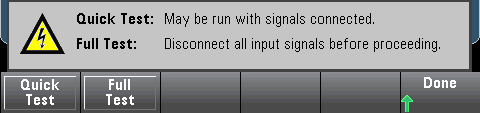
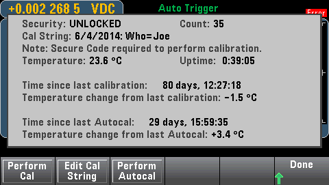
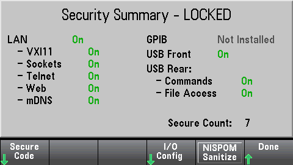

Test/Admin provides access to self-test, calibration, and administrative functions:
Self-Test verifies proper instrument operation. See Self-Test Procedures for details, and always safely disconnect inputs to the DMM terminals before running the Full Test.

Calibrate accesses the instrument calibration procedure. See Calibration for details.

Security manages the secure code and security features. If you have the SEC option, you must enter the Secure Code to configure some features.
NISPOM Sanitize sanitizes all user-accessible instrument memory except for the calibration constants and reboots the instrument. This complies with requirements in chapter 8 of the National Industrial Security Program Operating Manual (NISPOM).
|
|
The NISPOM Sanitize softkey and the SYSTem:SECurity:IMMEdiate command are equivalent. They are for customers, such as military contractors, who must comply with NISPOM. This feature destroys all user-defined state information, measurement data, and user-defined I/O settings such as the IP address. This feature is not recommended for use in routine applications because of the possibility of unintended data loss. |

Install License enables licensed instrument features. For information on obtaining licenses, go to www.keysight.com/find/truevolt.
After receiving a license file from Keysight, use the following procedure to install the license:
Firmware Update updates the instrument firmware to a new version. See Firmware Update for details.